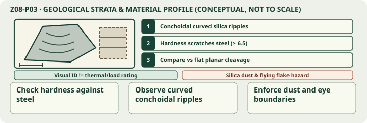

Z08-P03 · Rocks, minerals and materials · New manuscript
Chert, Flint, Quartz and Conchoidal Fracture
Recognize cryptocrystalline silica rocks by conchoidal fracture and hardness while enforcing strict dust, eye, and non-certification limits.
When it applies · Field recognition of chert nodules, jasper, Lake Superior agate, and vein quartz in Upper Midwest deposits.
Equipment · Hand lens, steel scratch tool, metric scale, ANSI Z87.1 eye protection if authorized training occurs.

Actions
- Identify cryptocrystalline silica candidates by hardness scratching steel and smooth curved conchoidal fracture surfaces lacking flat cleavage planes.[R04, R05]
- Separate visual recognition of chert or quartz from claims of thermal shock resistance, chemical purity, or tool-edge durability.[R05, R13]
- Prohibit dry grinding, crushing, or unguarded striking of quartz-rich stone because airborne crystalline silica dust damages lungs and flying flakes injure eyes.[R06]
Failure recognition · Mistaking fine-grained basalt, glass, or water-saturated chert for uniform silica leads to shattering, sharp-edge cuts, and silica dust inhalation.[R05, R06, R13]
Verify · Specimen exhibits glass-like curved fracture and scratches steel without crumbling, and no unauthorized striking or dry dust generation occurs.[R05, R06]
Stop or change course · Stop handling fractured silica if eye or respiratory protection is unavailable, if stone is wet near fire, or if land rules prohibit collection.[R06, R08, R13]
Evidence and editorial notes
- R04 · USGS · Collecting Rocks: Rock Classes and Mineral Property Basics (USGS GIP)
- Section: Hardness, luster, streak, and fracture vs cleavage · Conditions: Non-destructive mineral observation with simple field cues
Support: Scratch hardness, unglazed streak, luster, and fracture-versus-cleavage patterns narrow candidate mineral groups.
Limitations: Field scratch checks cannot establish chemical purity, trace heavy metals, or absence of hazardous fibers. · Conflicting evidence: Color alone is unreliable across quartz, calcite, and feldspar varieties.
Editorial note: Core Z08 mineral screening basis. · Specialist reviewer: Mineralogist
Primary source · checked 2026-11-25 - R05 · Minnesota DNR · Rocks and Minerals of Minnesota Educational Guide (Current web edition)
- Section: Chert, jasper, agate, and quartz occurrences · Conditions: Upper Midwest siliceous cobbles and sedimentary nodules
Support: Cryptocrystalline quartz varieties (chert, flint, jasper, agate) are hard silica rocks showing conchoidal fracture rather than planar cleavage.
Limitations: Visual similarity to fine-grained quartzite, basalt, or glass does not confirm thermal stability or structural suitability. · Conflicting evidence: None noted.
Editorial note: Anchors Z08 siliceous stone identification. · Specialist reviewer: Geologist and materials specialist
Primary source · checked 2026-11-25 - R06 · NIOSH / CDC · Crystalline Silica Respiratory Dust Hazards (2024)
- Section: Overview; Exposure · Conditions: Silica-bearing material disturbed by cutting, grinding, or similar dust-producing work
Support: Respirable crystalline silica exposure can cause silicosis and other disease. Avoid creating dust during field recognition.
Limitations: Hazardous particles may be invisible. Wind, casual wetting and a mask alone do not establish exposure control. · Conflicting evidence: Conditions are recorded in the A03 audit.
Editorial note: Mandatory Z08 silica/eye safety gate. · Specialist reviewer: Industrial hygienist and geologist
Primary source · checked 2026-11-25 - R08 · National Park Service / eCFR · 36 CFR 2.1 Preservation of Natural, Cultural and Archeological Resources (Current CFR)
- Section: 36 CFR 2.1 natural resource collecting prohibitions · Conditions: National Parks, Monuments, and federal recreation areas
Support: Collecting rocks, minerals, fossils, wood, or natural specimens is prohibited on National Park System lands unless specifically authorized.
Limitations: Rules vary across USFS, BLM, state, tribal, county, and private lands; check the governing land manager before taking any sample. · Conflicting evidence: None noted.
Editorial note: Prevents unlawful federal resource extraction. · Specialist reviewer: Public-lands resource manager
Primary source · checked 2026-11-25 - R13 · National Park Service · Rocks and Minerals Geological Overview (Current web edition)
- Section: Rocks and Minerals overview · Conditions: Unrated stones near a fire or during thermal cycling
Support: Use agency-approved fire facilities and keep people away from cracking or shifting material.
Limitations: Editorial avoidance. The cited geology overview does not establish a safe rock type, moisture test or heating threshold. · Conflicting evidence: Conditions are recorded in the A03 audit.
Editorial note: Reinforces Z03/Z08 wet-rock spalling stop. · Specialist reviewer: Geologist and fire safety reviewer
Primary source · checked 2026-11-25
Source lineage · New manuscript (Z08 P16 siliceous stone) · Classification · New manuscript.